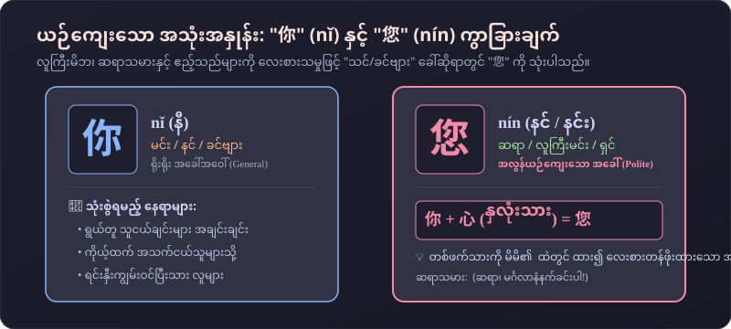
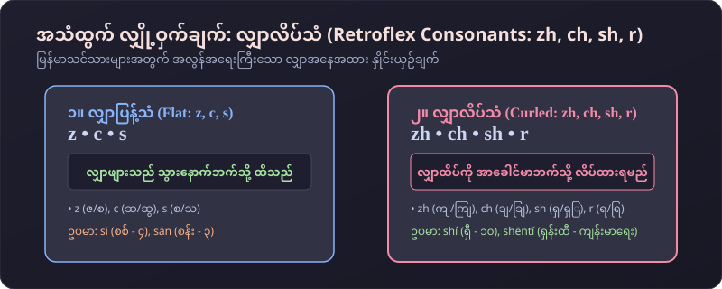
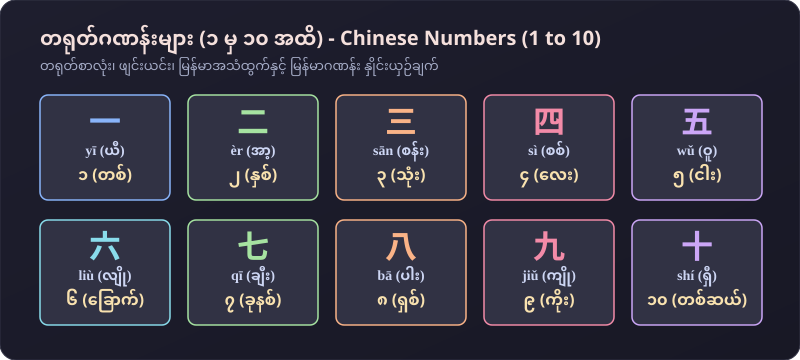

မနက်ခင်း နှုတ်ဆက်ခြင်း၊ ကျန်းမာရေး မေးမြန်းခြင်း၊ ကျေးဇူးတင်စကားနှင့် ဂဏန်းများ (၁ မှ ၁၀ အထိ)
မနက်ခင်း နှုတ်ဆက်ခြင်းနှင့် ကျန်းမာရေး မေးမြန်းရာတွင် အသုံးများသော စကားများ
အပြန်အလှန် စကားပြော လေ့ကျင့်ခန်းများ
လေးစားသမှု အသုံးအနှုန်း၊ "都" ၏ သဒ္ဒါပုံစံနှင့် လျှာလိပ်သံများ
မြန်မာစကားတွင် "ခင်ဗျား/ရှင်/ဆရာ" ဟု လေးစားစွာ သုံးသကဲ့သို့ တရုတ်ဘာသာတွင် ဆရာသမားနှင့် လူကြီးမိဘများကို 您 (nín) ဟု သုံးရပါသည်။

"都" သည် အများဆိုင်ကတ္တား၏ နောက်နှင့် ကြိယာ/နာမဝိသေသန၏ ရှေ့တွင် အမြဲရှိရပါမည် (ဥပမာ- 我们 都 很好)။
လျှာဖျားကို အာခေါင်မာဘက်သို့ အပေါ်လိပ်၍ အသံထွက်ရသော အသံများ ဖြစ်ပါသည်။

အသံထွက်နှင့်အတူ တွဲဖက်လေ့ကျင့်ပါ

အလွတ်ကျက်မှတ်ရမည့် အခြေခံ စကားလုံးများ
| # | တရုတ်စာလုံး | ဖျင်းယင်း | မြန်မာအသံထွက် | မြန်မာအဓိပ္ပာယ် | အသံ |
|---|---|---|---|---|---|
| 1 | 早 | zǎo | ဇောင် | စောသော / မင်္ဂလာနံနက်ခင်း (Early) | |
| 2 | 身体 | shēntǐ | ရှန်းထီ | ခန္ဓာကိုယ် / ကျန်းမာရေး (Health/Body) | |
| 3 | 谢谢 | xièxie | ရှဲ့ရှဲ့ | ကျေးဇူးတင်ပါတယ် (Thanks) | |
| 4 | 再见 | zàijiàn | ဇိုက်ကျန့် | နောက်မှ ပြန်တွေ့မယ် / နှုတ်ဆက်ပါတယ် (Good-bye) | |
| 5 | 老师 | lǎoshī | လောင်ရှီး | ဆရာ / ဆရာမ (Teacher) | |
| 6 | 您 | nín | နင် / နင်း | ဆရာ / ခင်ဗျား / ရှင် (လေးစားသမှု You) | |
| 7 | 我们 | wǒmen | ဝေါ်မန် | ကျွန်တော်တို့ / ကျွန်မတို့ (We / us) | |
| 8 | 都 | dōu | သိုး / တို | အားလုံး / အကုန်လုံး (All / both) | |
| 9 | 今天 | jīntiān | ကျင်းထျန်း | ဒီနေ့ (Today) | |
| 10 | 号 (日) | hào (rì) | ဟောင် (ရစ်) | ရက်စွဲ / ရက်နေ့ (Date of month) |
သင်ခန်းစာ (၂) အတွက် မိမိကိုယ်ကို အဖြေမှန် စစ်ဆေးကြည့်ပါ
မေးခွန်း (၁): ဆရာသမား (သို့မဟုတ်) သက်ကြီးဝါကြီးများကို လေးစားသမှုဖြင့် "ခင်ဗျား/ရှင်/သင်" ဟု ခေါ်ဆိုရာတွင် မည်သည့် စကားလုံးကို သုံးသနည်း?
မေးခွန်း (၂): "ကျွန်တော်တို့ အားလုံး နေကောင်းကြပါတယ်" ၏ မှန်ကန်သော တရုတ်ဝါကျမှာ အဘယ်နည်း?
မေးခွန်း (၃): တရုတ်ဂဏန်း "ရှစ် (8)" ၏ အသံထွက်မှာ အဘယ်နည်း?